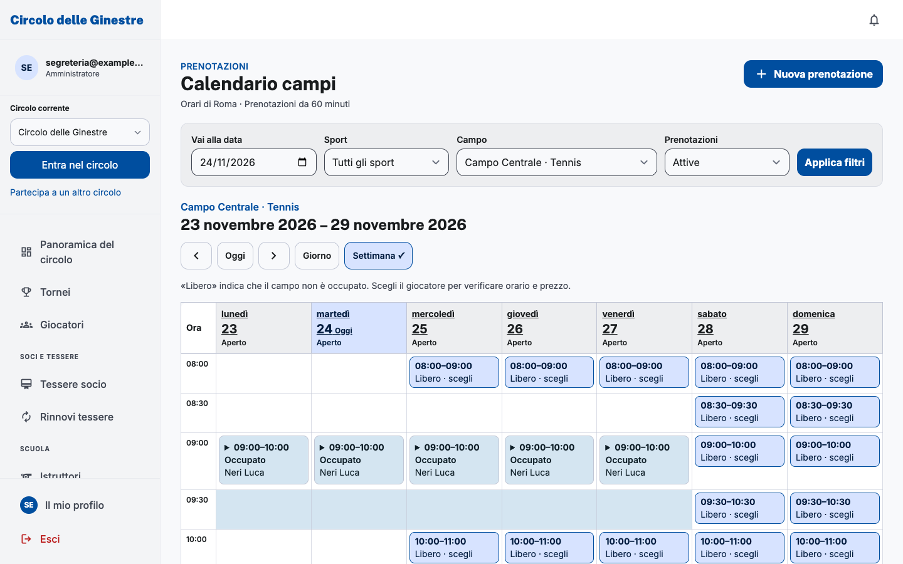
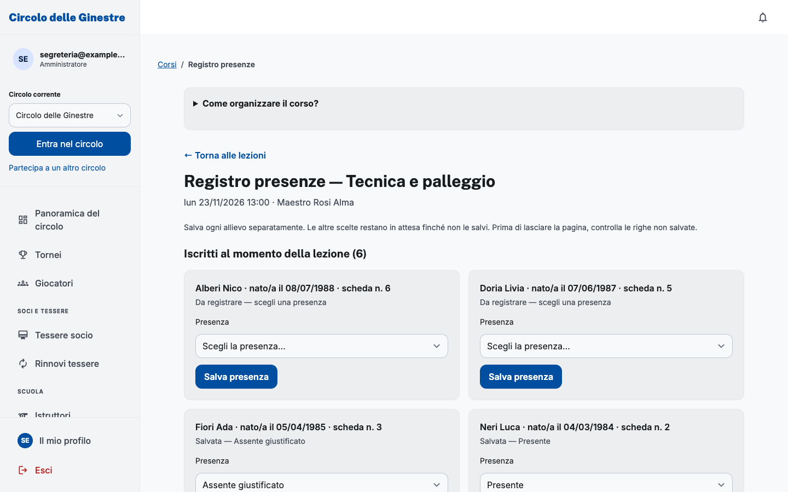
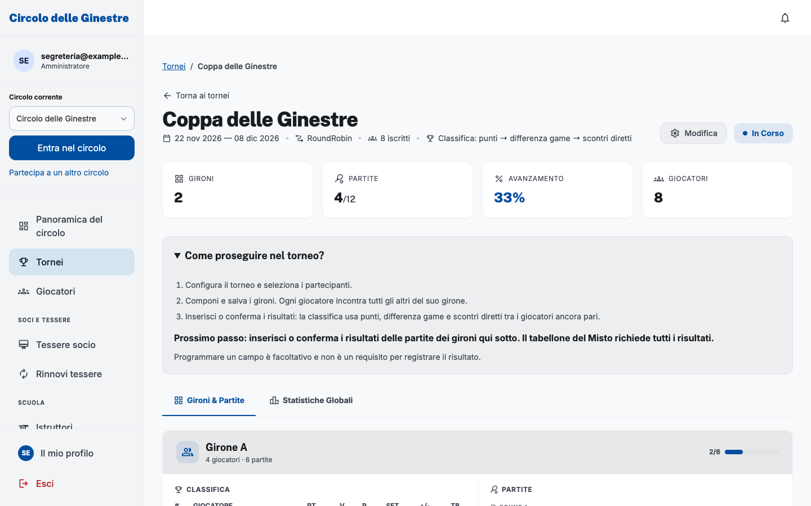
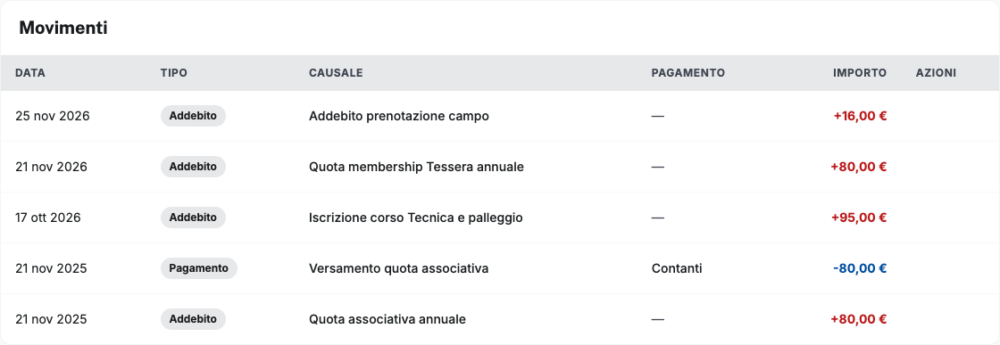

Gestionale per circoli di tennis
Il circolo, in un solo posto.
Prenota i campi, rinnova le tessere e segna le presenze da un’unica postazione. CircoloManager mette in relazione gli impegni del circolo e le persone che ne fanno parte.
Leggi il case study tecnico

Chi ha il campo questo pomeriggio?
Un socio chiede un’ora di tennis. Sull’agenda della segreteria il campo è libero, ma l’istruttore tiene le lezioni su un altro foglio. Prima di rispondere bisogna controllare entrambi.
CircoloManager riunisce lezioni, incontri di torneo e prenotazioni libere in un solo calendario. Dalla stessa postazione la segreteria può trovare un socio, controllare un rinnovo e consultare le quote registrate.
Dentro CircoloManager
Esplora la postazione della segreteria. Le schermate del gestionale mostrano i dati di un circolo fittizio.

Inizia il turno
La Home dà accesso diretto al calendario e alla ricerca dei giocatori per il personale autorizzato nel circolo selezionato.
Apri l’immagine a piena risoluzione
Trova il socio giusto
Cerca per nome e cognome e apri la scheda del giocatore. Il numero di scheda aiuta la segreteria a distinguere due omonimi.
Apri l’immagine a piena risoluzione
Controlla il rinnovo prima di confermare
La segreteria verifica periodo e quota prima del salvataggio. Un rinnovo a pagamento genera un addebito. L’incasso si registra separatamente.
Apri l’immagine a piena risoluzione
Segna le presenze una alla volta
Ogni lezione ha un registro. La segreteria può salvare la presenza di un allievo mentre la modifica alla riga di un altro resta in bozza.
Apri l’immagine a piena risoluzione

Segui il torneo
Gli organizzatori gestiscono incontri a gironi e a eliminazione diretta. I risultati disputati alimentano le classifiche.
Apri l’immagine a piena risoluzione

Segui la posizione economica del socio
Quote e incassi registrati confluiscono in un unico storico. Le rettifiche conservano il movimento originario, così la segreteria può ricostruire le variazioni.
Apri l’immagine a piena risoluzione

In circolo, dallo smartphone
Sullo smartphone il calendario dispone in una sola colonna le fasce libere e occupate della giornata. La segreteria può leggerle senza scorrere lateralmente.
Apri l’immagine a piena risoluzioneDemo del prodotto
Due operazioni di segreteria
- Rinnovare una tessera
Cerca il socio per nome, apri la sua scheda e visualizza l’anteprima. Controlla le date e la quota, conferma il rinnovo e verifica il risultato sulla scheda.
- Prenotare un campo
Apri il calendario e avvia una prenotazione sul campo centrale. Seleziona il giocatore e un orario disponibile, controlla la tariffa e conferma. Il calendario mostra la disponibilità aggiornata.
Architettura del software
Una regola per ogni ora di campo
Una lezione e una prenotazione libera possono contendersi la stessa ora. Entrambe seguono le stesse regole di occupazione. Il case study racconta come questa scelta si intreccia con i permessi del circolo, le richieste concorrenti e le conferme interrotte.
Leggi il case study tecnicoRichiedi una dimostrazione
Scrivi a Lorenzo Bacci su LinkedIn per approfondire il prodotto o concordare una presentazione per il tuo circolo.